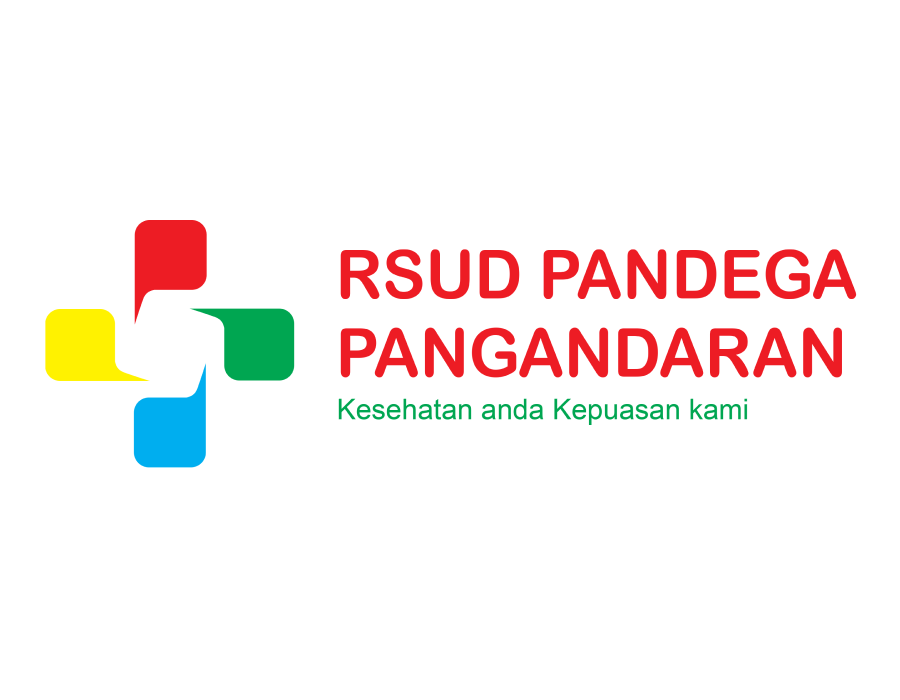

RSUD Pandega Pangandaran
Fisioterapi adalah bentuk pelayanan kesehatan yang ditujukan kepada individu dan/atau kelompok untuk mengembangkan, memelihara dan memulihkan gerak dan fungsi tubuh sepanjang rentang kehidupan dengan menggunakan penanganan secara manual, peningkatan gerak, peralatan (physics, elektroterapeutis dan mekanis) pelatihan fungsi, dan komunikasi. Fisioterapi didasari pada teori ilmiah dan dinamis yang diaplikasikan secara luas dalam hal penyembuhan, pemulihan, pemeliharaan, dan promosi fungsi gerak tubuh yang optimal, meliputi; mengelola gangguan gerak dan fungsi, meningkatkan kemampuan fisik dan fungsional tubuh, mengembalikan, memelihara, dan mempromosikan fungsi fisik yang optimal, kebugaran dan kesehatan jasmani, kualitas hidup yang berhubungan dengan gerakan dan kesehatan, mencegah terjadinya gangguan, gejala, dan perkembangan, keterbatasan kemampuan fungsi, serta kecacatan yang mungkin dihasilkan oleh penyakit, gangguan, kondisi, ataupun cedera
Pelayanan meliputi terapi pada gangguan muskuloskeletal, neurologi, serta rehabilitasi pasca stroke.
Nyeri pada leher sering disebabkan oleh postur yang buruk, ketegangan otot, atau saraf terjepit.
Nyeri bahu dapat disebabkan oleh rotator cuff injury, frozen shoulder, atau tendonitis.
Nyeri siku sering terjadi pada tennis elbow atau akibat penggunaan otot berulang.
Gangguan ini dapat disebabkan oleh carpal tunnel syndrome atau aktivitas berulang.
Nyeri punggung sering disebabkan oleh postur buruk, ketegangan otot, atau aktivitas berat.
Low back pain merupakan salah satu keluhan paling sering ditangani oleh fisioterapis.
Gangguan ini dapat disebabkan oleh cedera otot, ketegangan tendon, atau saraf terjepit.
Terapi fisioterapi pasca stroke bertujuan mengembalikan fungsi gerak tubuh, meningkatkan kekuatan otot, dan membantu pasien kembali mandiri.
Bell's palsy adalah kelemahan otot wajah akibat gangguan saraf wajah yang biasanya terjadi secara tiba-tiba.
Jl. Raya Merdeka No. 412
Desa Pananjung, Pangandaran
@rsud_pangandaran
(0265) 7503045
082120056071